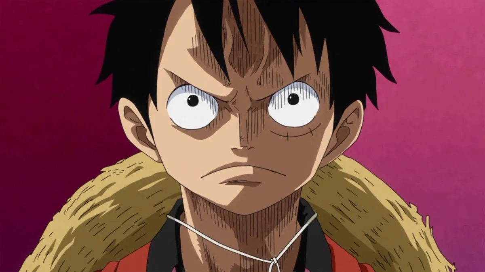
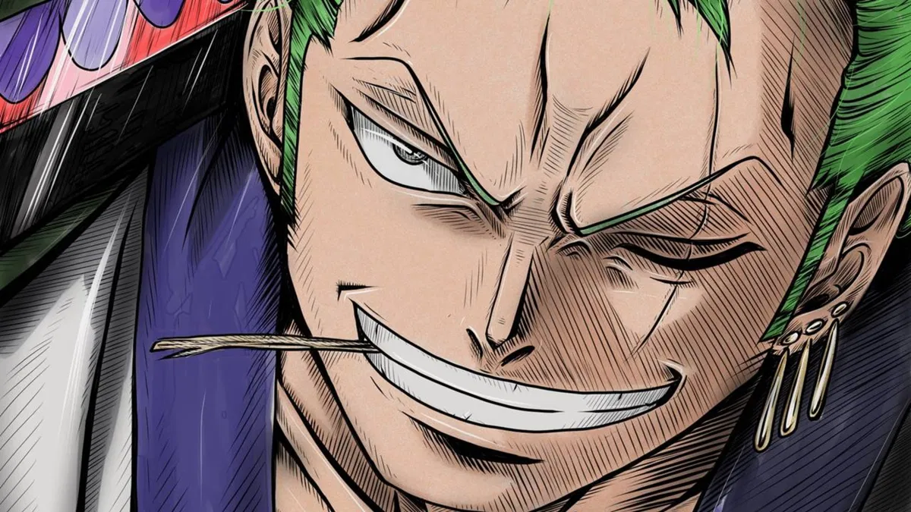
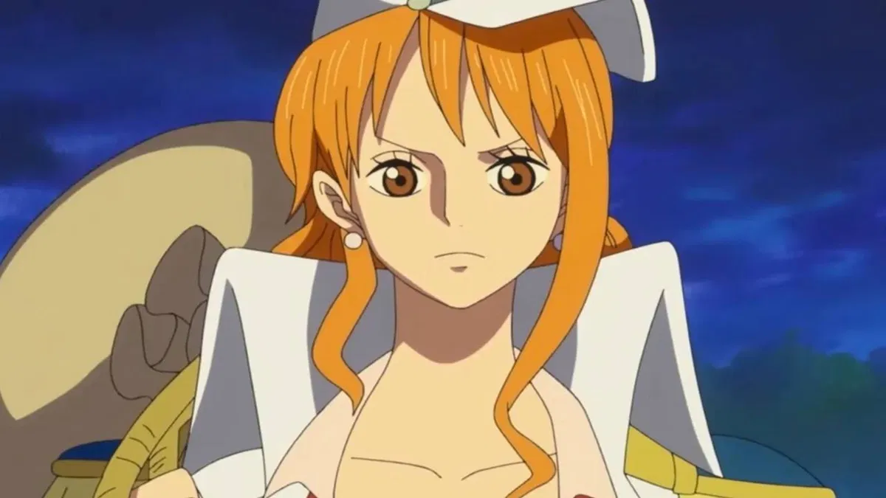
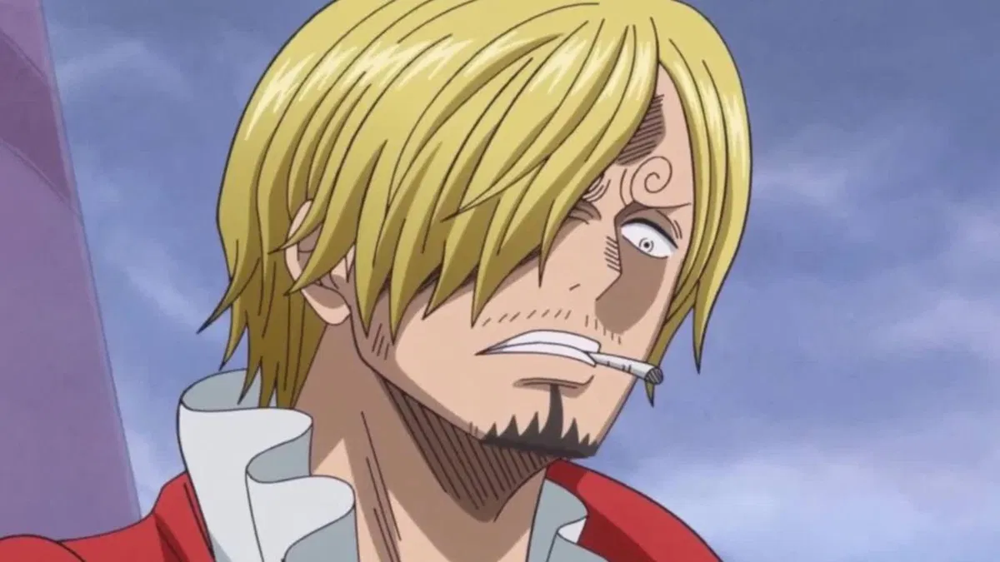
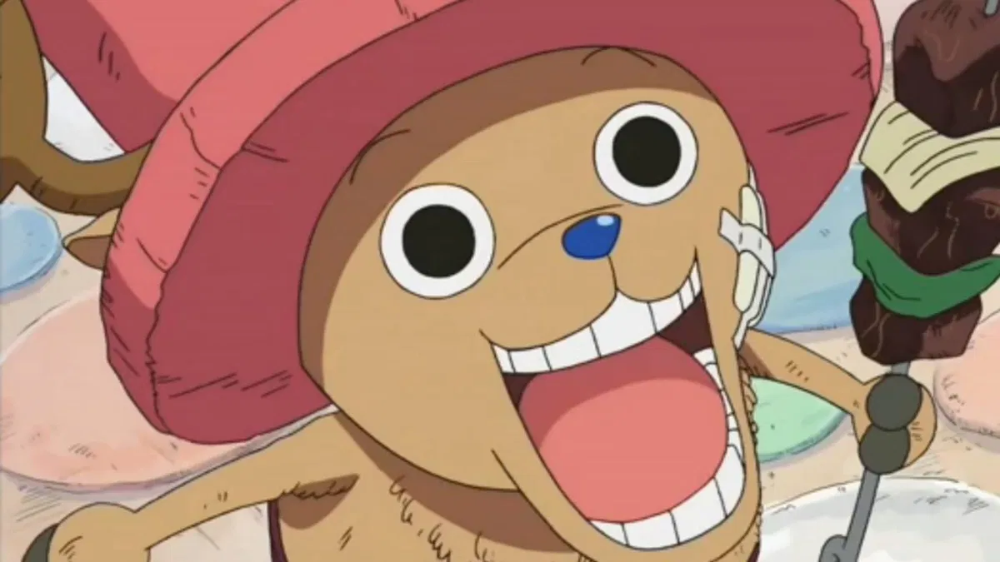
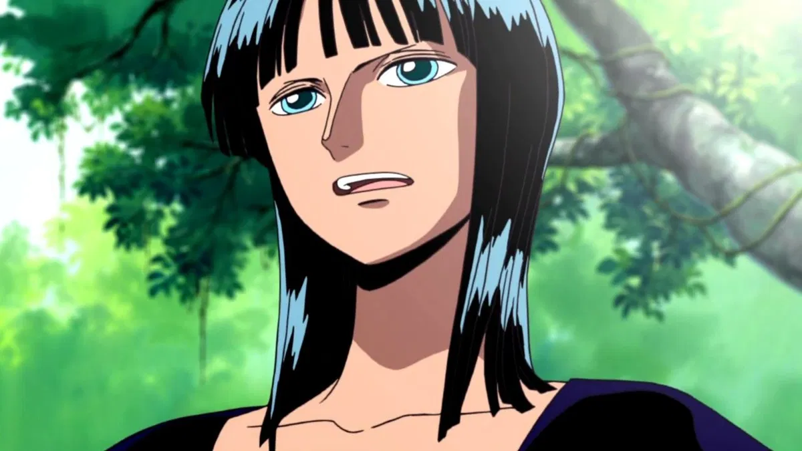
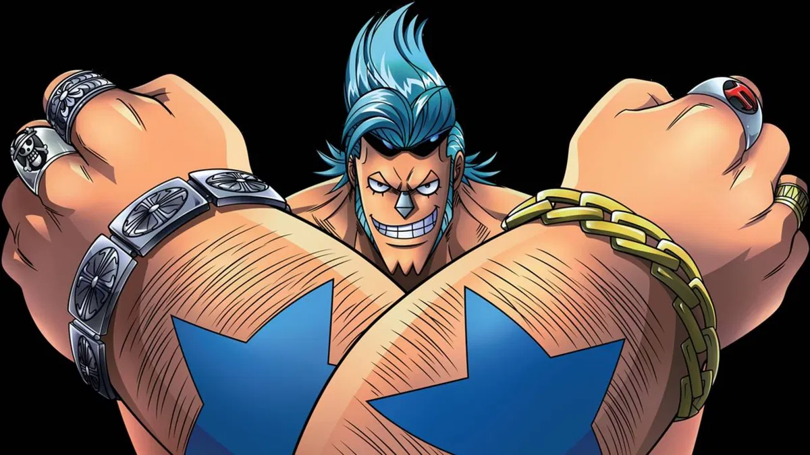
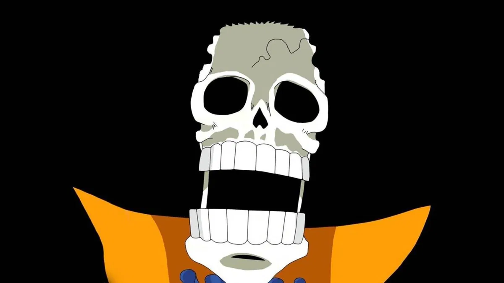
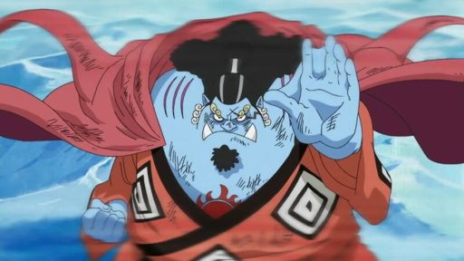

One Piece (ひとつなぎの大秘宝ワンピース Wan Pīsu?) es un manga escrito y dibujado por Eiichiro Oda, que ilustra las aventuras
de los protagonistas piratas, en concreto la tripulación pirata formada por Monkey D. Luffy, quienes están en la
búsqueda de un tesoro llamado One Piece. Fue publicado por primera vez el 19 de julio de 1997 en la revista
Shonen Jump.
Actualmente ha publicado más de 1000 capítulos (recopilados en más de 100 volúmenes tankōbon ) y ha generado
una
franquicia global, que incluye una adaptación al anime de Toei Animation, numerosas películas , una serie de
imagen real e innumerable merchandising. Desde finales de la década de 2000 ha sido reconocido como el manga más
popular de Japón, incluso siendo conmemorado por el Libro Guinness de los récords como el "cómic de un solo
autor más vendido del mundo".
PERSONAJES

Monkey D. Luffy
Toda la historia gira alrededor de Luffy y sus compañeros. De hecho, el nombre de la tripulación
proviene de su representativo sombrero de paja que lleva a todos lados consigo. Este es el líder de la
banda, un joven que quiere convertirse en el Rey de los Piratas y que ha consumido la fruta del diablo Gomu
Gomu, la cual le permite hacer que su cuerpo sea elástico. Su actitud es valiente, alegre y fiel, aunque sus
mayores defectos es que puede llegar a ser irresponsable en algunos aspectos.

Roronoa Zoro
También conocido como "El Cazador de Piratas", es uno de los personajes más queridos de todo One Piece,
pues tiene tanto caracter que todas las katanas de Roronoa Zoro tienen nombre. Se caracteriza porque siempre
viste de color verde y tiene una gran destreza con las armas, tanto así que tiene la capacidad de usar hasta
tres espadas al mismo tiempo. Definitivamente, es alguien serio, disciplinado y de pocas palabras, su sueño
el convertirse en el mejor espadachín de todo el planeta.

Nami
Nami fue la tercera en formar parte de la tripulación de los Piratas Sombrero de Paja, una chica que se
dedica a navegar para conocer el mundo y tiene el objetivo de dibujar un mapa completo del planeta. Sus
habilidades están centradas principalmente en un arma llamada Clima-Tact, la cual le otorga las habilidades
de manipular el clima. En cuanto a su personalidad, Nami destaca por su inteligencia y por ser muy astuta.
Usopp
Usopp tiene un estio único que puede llamar la atención a todos los sitios a los que va. Una de sus
habilidades más impresionantes es que tiene la capacidad de usar la honda como un verdadero francotirador,
contando así con una variedad de tipos de proyectiles y una precisión absoluta sorprendente. Su sueño es ser
como su padre Yasopp, quien era un guerrero del mar muy valiente.

Sanji
Todos conocen a Sanji por su elegancia y altruismo, mientras que también ha destacado por ser uno de los
más
fuertes de la tripulación junto a Zoro y Luffy. Su cargo en el equipo es de Chef, pero también es un gran
exponente de la técnica de combate Diable Jambe, la cual consiste en realizar ataques con las piernas, algo
que le ha adjudicado el apodo de "Pierna Negra". Su misión es encontrar un océano mítico llamado "All Blue".

Tony Tony Chopper
El doctor encargado de los Piratas Sombrero de Paja es Tony Tony Chopper, un reno con rasgos de humano
obtenidos gracias a la fruta del diablo Hito Hito no Mi. El sueño que tiene es convertirse en un médico
capaz
de sanar cualquier mal o enfermedad y, aunque su recompensa sea la más baja, también es un integrante clave
del equipo.

Nico Robin
La séptima integrante del grupo es Nico Robin, una mujer bastante misteriosa y elegante que se dedica a ser
arqueóloga. Ella consumió la fruta Hana Hana no Mi, que le otorga la habilidad de crear copias de las partes
de su cuerpo, como tener varias extremidades, por ejemplo. El objetivo de este personaje es hacer que los
secretos históricos del mundo sean revelados con los antiguos Poneglyphs.

Franky
Después de sufrir un terrible accidente, Franky se convirtió en un tipo de cyborg con la capacidad de usar
armas integradas en su cuerpo. Es uno de los más carismáticos del grupo y su sueño consiste en generar y
surcar el océano en el navío más grande del mundo que le pondría como nombre "Thousand Sunny".

Brook
A diferencia de otros integrantes, Brook tiene el objetivo de volver a su antigua banda musical llamada
"Rumbar Pirates" para dedicarle una canción a una ballena conocida como "Laboon". Este es el músico de la
tripulación y fue quien comión la fruta del diablo Yomi Yomi, que le otorgó una segunda oportunidad de vida
y también le permite separar el alma de su cuerpo. En pocas palabras, es un esqueleto viviente con un buen
sentido del humor y apasionado por la música.

Jinbē
Por último y no menos importante, se encuentra Jinbe, el timonel del barco de los Piratas Sombrero de Paja.
Su apariencia es muy diferente a los demás miembros del equipo porque es un gyojin tiburón ballena. Sus
poderes consisten en manipular el agua y los peces que hay en ella con el uso del arte marcial Karate
Gyojin. Con respecto a sus objetivos, es hacer que los humanos y los hombres-pez convivan en paz.
TRAILER
Acompañado de su ecléctica tripulación, el joven pirata Monkey D. Luffy emprende un viaje en busca de un tesoro
legendario en esta adaptación del popular manga.
Para surcar los mares, el capitán pirata Monkey D. Luffy reúne a una tripulación de lo más variada conformada
por un espadachín, una navegante, un cocinero y un inventor.